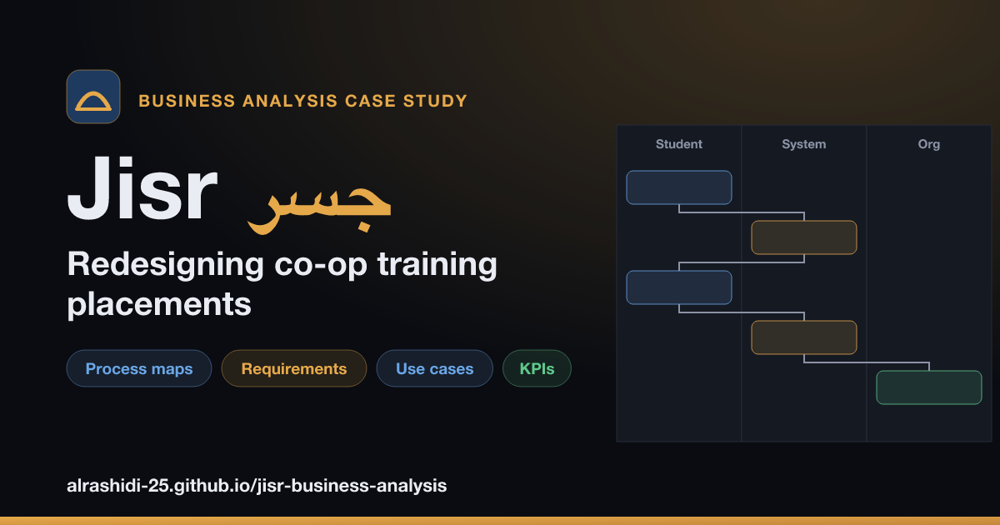

جسر · Jisr — Co-op Placement System, End to End
One real problem taken from requirements, to a tested database, to a KPI dashboard.
Problem: Co-op training placements run on paper forms, email and spreadsheets. Students can't see where their request is, staff type nomination letters one by one in the same few weeks every term, and nobody has reliable data on placements or partners.
Approach: Analyzed the process the way an analyst would, specified the system that fixes it, built and tested the database behind it, and designed the dashboard that measures whether the fix works.
Headline finding (synthetic data) — requests arriving in the last three weeks before term met the review target only 46–49% of the time, against 84–90% for earlier ones: a timing problem, not a staffing one.
-
1
Business analysis case study
Current and future process maps, 7 pain points traced to root causes, 28 requirements with MoSCoW priorities, use cases, user stories, KPIs, a weighted options analysis and a 17-page BRD.
-
2
Database & SQL analysis
An 18-table SQLite schema that enforces the approval workflow with triggers, 563 synthetic requests, 16 business questions answered in SQL, and 11 tests proving the rules hold.
-
3
Power BI dashboard
Star schema with personal data removed, 27 DAX measures, a custom report theme, and four built pages — every card verified against independently computed values.